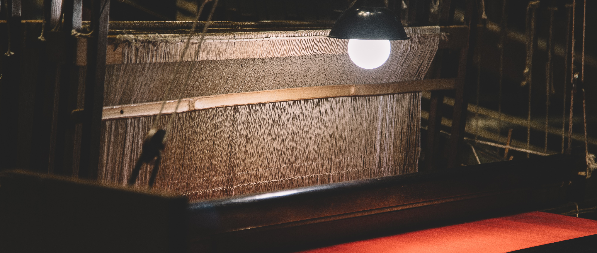

蜀锦，中国四大名锦之一，起源于战国时期，兴盛于汉唐，以精湛的手工织造技艺和独特的艺术风格闻名于世。其手工织造过程凝聚了历代匠人的智慧，融合了复杂的工艺技术与深厚的文化内涵，被誉为“东方瑰宝”。以下从技艺流程、工具材料及文化价值三个方面，为您呈现蜀锦手工织造的核心内容。
一、传统织造工具与材料
蜀锦织造以传统木制花楼机（又称"小花楼织机"）为核心工具，其结构复杂精密，需由两名工匠上下协作完成。这台高达5米的织机分为上下两层：上层"花楼"由挽花工通过提综装置控制经线起综，下层织工则同步操作梭子与筘板，通过"拉花"引纬、"投梭"穿梭、"打纬"固线等连贯动作实现经纬交织。
原料选用优质桑蚕丝，经缫丝、并丝、捻丝等工序制成经纬线。经线经上浆处理增强韧性，纬线则采用传统植物染料（茜草染红、蓝草着青、栀子呈黄）与矿物颜料浸染，色彩历经千年仍保持古朴典雅。染色后的纬线卷绕于竹制梭子，与上浆经线共同构成蜀锦织造的物质基础，成就其"东方瑰宝"的独特魅力。

二、手工织造核心工艺
蜀锦织造需历经设计、挑花结本、上机织造三大阶段，全程依靠匠人数十年经验积累与高度默契配合，一匹精品往往耗时数月方能完成。首先在图案设计阶段，匠人依据传统龙凤、麒麟、花鸟、云纹等吉祥纹样或现代定制需求绘制意匠图，将艺术构思转化为可操作的织造程序。
核心环节挑花结本堪称蜀锦技艺的"数字密码"，匠人通过挑花、倒花、拼花等技法，将意匠图转化为用丝线编织的立体"花本"——这一古代二进制编程系统，通过丝线的经纬排列精确记录图案的提花规律，如同为织机编写三维程序链，控制着每根经线的提拉顺序。
最终阶段的上机织造需两位匠人上下协作：上层挽花工依照花本口诀精准提拉经线形成开口，下层织工同步脚踏分综、双手如梭交替投梭引纬，并用木筘反复打紧纬线。这种"人器合一"的协作每日仅能推进5-10厘米，若遇多色重纬锦更需频繁换梭，技艺难度与耗时倍增，彰显着"寸锦寸金"的千年匠心。
三、技艺特点与文化价值
蜀锦凭借"通经断纬"这一独特技法实现色彩自由变化，在织造过程中纬线可根据纹样需求灵活换色，通过数十种色纬的交织碰撞，形成"纬线显花"的立体视觉效果。这种工艺使纹样在繁复中不失细腻，既保留传统织锦的庄重典雅，又赋予现代审美的灵动层次，成就了"一锦千色"的艺术魅力。
为延续这一千年技艺，蜀锦织造技艺于2006年入选国家级非物质文化遗产名录。成都蜀锦织绣博物馆与传统工坊至今仍坚持古法生产，通过"师徒相授"的口传心授模式传承核心技艺。在保留传统纹样精髓的同时，匠人们积极探索与现代设计的融合，将蜀锦元素应用于时装、家居等领域，让承载着2000多年历史的东方瑰宝在当代焕发新生，实现了非物质文化遗产的活态传承。
蜀锦手工织造不仅是技艺的延续，更是中华文明“天人合一”哲学观的体现。一梭一丝的往复间，承载着两千年的工艺密码与文化记忆，堪称“寸锦寸金”的匠心传奇。